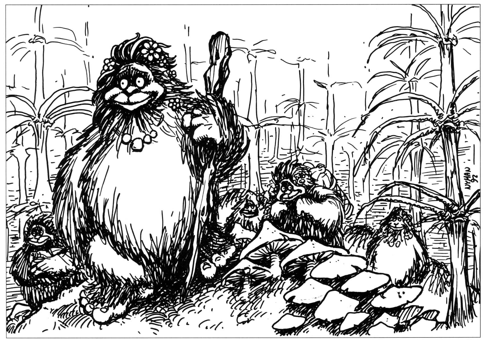
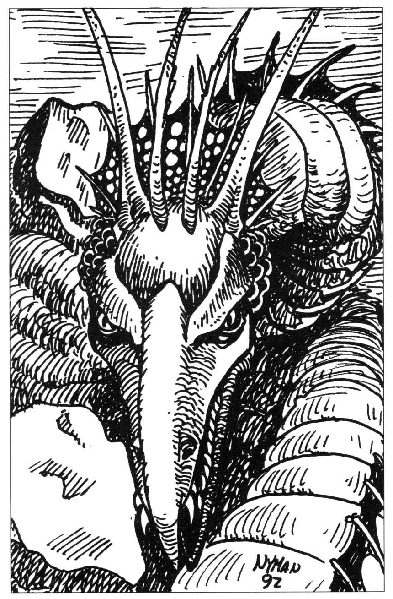
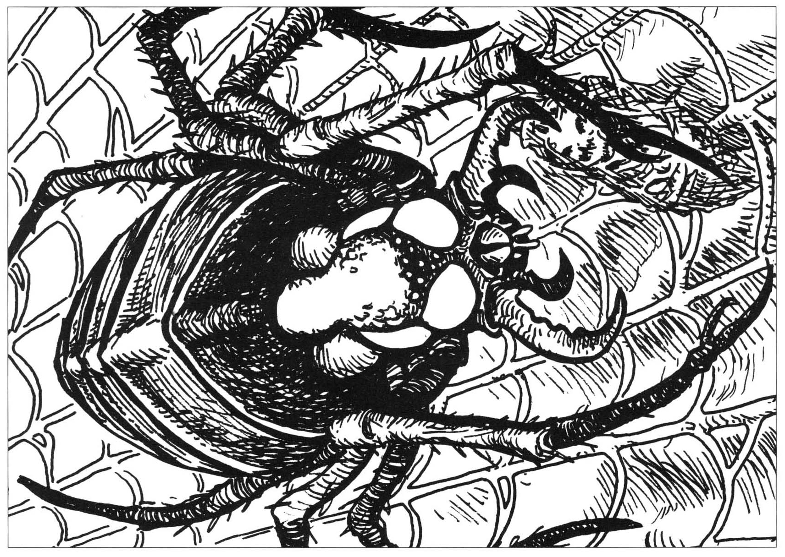
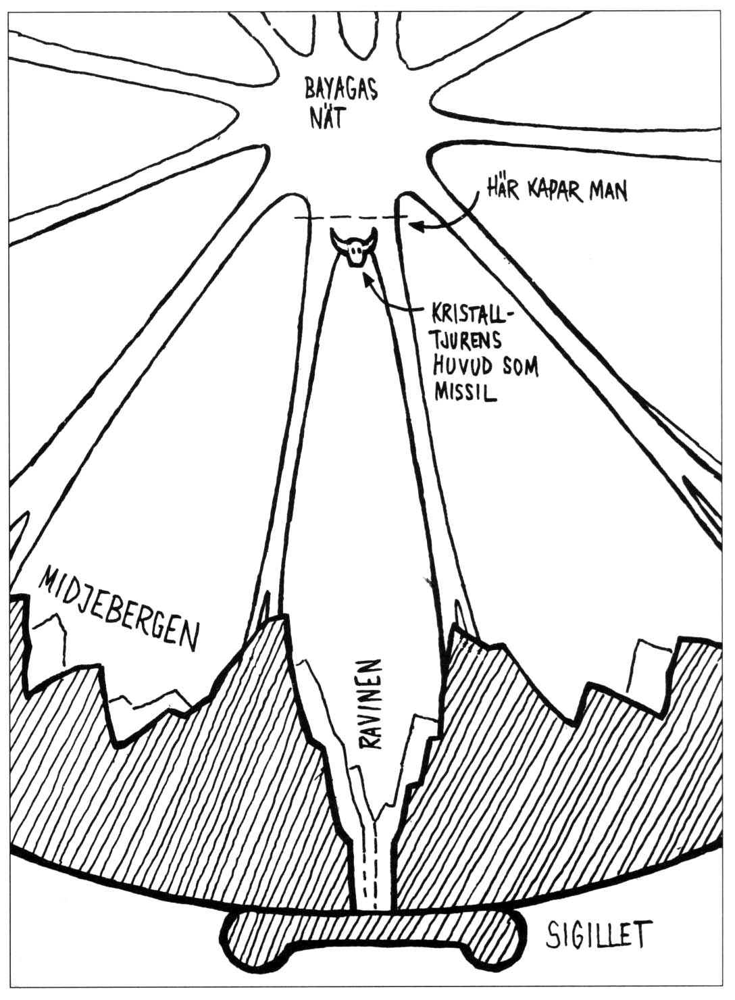

03. Bythos
Artiklar: Bythos Personer och varelser: Alla varelser i Bythos
Rollpersonerna kläcks i Bythos
Bythaner lever huvudsakligen på att odla polmer, små varelser som är ett mellanting mellan djur och växter. Polmerna kläcks ur polmerträdens frukter. Just nu är frukterna i ett kilometerbrett avsnitt av Polmerskogen i södra Bythos mogna. Bythaner av ormstammen är i full färd med att samla in de nykläckta polmerna och samtidigt försvara dem och sig själva mot de utsvultna stavdemonerna. Strider pågår därför i hela skogen.
Varje rollperson vaknar i Bythos, innesluten i en mogen frukt på ett polmerträd. Personen kan slå hål på polmerskalet genom att lyckas med ett vanligt STY-slag, och sedan bryta sig ut ur frukten på (20 —STY) stridsrundor. Frukten befinner sig 1T6 meter över marken (observera att skador av fall halveras om personen hoppar), men fjädrar högre upp så snart man släpper den. Personen med högst FYS vaknar först, därefter de andra i omvänd FYS-ordning, med en minuts skillnad per poäng. SL kan lämpligen ta in spelarna i enrum en efter en och berätta ungefär följande:
Det sista du minns är ett ändlöst fall genom tomma rymden sedan ni öppnat en stor port. Sega trådar fastnade på dig tills du var helt innesluten i en klibbig massa och förlorade medvetandet. Nu vaknar du långsamt ur en drömlös sömn. Det är kvavt och varmt. Du upptäcker att du sitter fast, helt innesluten i en porös substans som knastrar och ger vika för dina rörelser, ungefär som maräng. Du uppfattar bara ett svagt rött ljus och dämpade ljud.

Första sinnesintrycken i Bythos sedan man kommit ur frukten:
- Allt är rött. En lysande röd blixt är skuren över himlavalvet. (Det är den röda floden man anar på andra sidan Bythos, men det vet inte äventyrarna). Ingen annan ljuskälla syns.
- Det är varmt.
- Det är svårt att andas.
- Man befinner sig i en djup dal med branta berg åt två håll. (Detta är en felaktig tolkning av att horisonten kröker sig uppåt med- och moturs)
- Man befinner sig i en gles skog med gigantiska träd som mest liknar något slags havsanemoner. I träden hänger stora avlånga frukter.
Ingenting säger att alla rollpersoner kläcks i närheten av varandra. SL kan placera ut dem som han vill eller slumpmässigt bestämma var de dyker upp i skogen. Följande tabell kan bestämma vad som händer just där varje person vaknar:
1T8 Situation
-
Ingen finns i närheten, men stridslarm, främmande rop och pipande ljud hörs några hundratal meter bort. Om äventyraren söker sig mot ljudet => gå till 6. Om inte, slå igen var 10:e minut. Resultatet 8 innebär att man stöter ihop med några av sina kamrater.
-
3+1T6 bythaner står vid trädet och väntar på att polmer ska kläckas. När istället rollpersonen dyker upp flyr de i panik och berättar om den fula pälslösingen för sin ledare.
-
3+1T6 bythaner inklusive en ledare väntar vid trädet. När rollpersonen dyker upp retirerar de, men stannar kvar trettio meter bort. De snattrar upphetsat och rådslår om vad de ska göra.
-
3+1T6 bythaner inklusive en ledare väntar med två nykläckta polmer vid trädet. De retirerar, men ledaren mjölkar lite sekret från en polm och erbjuder rollpersonen under stor vördnad.
-
3+1T6 stavdemoner väntar vid trädet. Tre av dem äter på en ännu levande, nykläckt polm, medan de andra misstänkt stirrar på rollpersonen som inte alls motsvarar deras förväntningar. Så småningom går de ändå till angrepp. (SL bör i detta fall ha ”kavalleriet” i beredskap, kanske i form av fler äventyrare, eller en trupp bythaner.
-
3+1T6 stavdemoner slåss med 3+1T6 bythaner vid trädet. De som är flest har övertaget. När rollpersonen kläcks avstannar striden för ett ögonblick, men snart ryker man ihop igen. Den nykläckte kan blanda sig i på valfri sida.
-
Rollpersonen kläcks helt naken. Hans utrustning har hamnat i andra polmerfrukter på samma träd. Slå igen för ett resultat mellan 1 och 6.
-
1T4 rollpersoner kläcks från samma träd. Slå igen för ett resultat mellan 1 och 6.
Ormstammen
Först ett råd till SL: Om rollpersonerna inte kan leva av maten i Bythos, vilket SL får avgöra, är det viktigt att de snarast får reda på detta. De måste dels förstå att deras uppdrag brådskar, dels att de ska vara rädda om den mat de har med sig. SL kan till exempel säga att det som kommer ut i andra änden ser precis likadan ut som maten de åt dagen innan (äckligt, men klart intressant). Den tycks över huvud taget inte ha påverkats av passagen genom tarmkanalen. SL bör i fortsättningen hålla noga koll på tid och mat som åtgår.
Om äventyrarna blir ovänner med ormstammen
Om äventyrarna valde stavdemonernas sida mot bythanerna eller själva angrep bythanerna får de ingen hjälp utan måste själva snoka runt i Bythos för att komma fram till vad de ska göra. De bör komma till Kristalltjuren och läsa inskriptionen. Kanske träffar de ormen Nachash. Kanske kallar han i sin tur dit en ålderman som kan tolka vad han vill säga.
Valde man stavdemonernas sida i striden, blir dessa otacksamma varelser inte snällare för det, utan försöker hur som helst äta upp sällskapet.
Om rollpersonerna inte kommer in på rätt spår, får de själv ta sig till Bythos norra ände förbi spindeln Bayaga. Sannolikt träffar de så småningom Iblis och får höra hans historier som inte hjälper dem framåt det minsta. I detta läge kan SL låta Iblis varna flera gånger för att äta de violetta frukterna i förbjudna skogen, så att äventyrarna så småningom fattar att de måste göra just detta.
Om äventyrarna blir vänner med ormstammen
Om äventyrarna kämpat mot stavdemonerna eller betett sig fredligt kommer snart bythanerna fram till dem. Så småningom träffar de en eller flera av ormstammens ledare som i sin tur för med sig främlingarna till åldermännen i hemgrottan.
I grottan ställer man till gästabud, speciellt om främlingarna kämpat på stammens sida mot stavdemonerna. Åldermännen berättar med hjälp av Det låga språket vad de vet om Bythos och vill redan nästa dag föra gästerna till sin skyddsande Nachash vid Kristalltjuren. Han vet ju alltid bäst.
Om äventyrarna inte vill följa med får de snoka i Bythos på egen hand och går miste om den information Nachash kan ge dem.
Ormen Nachash vid Kristalltjuren
SL: Kom ihåg att allt Nachash säger måste förmedlas av de förvirrade och skrämda åldermännen från ormstammen på Det låga språket.
När Nachash får syn på rollpersonerna inser han genast att de inte hör till Bythos. Frågar de om Store Stenfar blir han mycket upphetsad och visar dem inskriptionen på Kristalltjurens sockel. Han vill gärna ha deras hjälp att lösa tjurens gåta, men vill samtidigt inte berätta om sina egna teorier eftersom dessa inte givit någon lösning.
Nachash kan berätta för rollpersonerna att de är i världen Bythos, som skapats av en gud som heter Nominatorn. Han berättar så gott det går om de sju arkonerna som styr världen och att han blivit ovän med de andra sex. Något är fel med Bythos, men ormen vet inte vad. Han vill att äventyrarna ska gå till den förbjudna skogen och äta av samma violetta frukter som han gjorde för att själva bilda sig en uppfattning. Efter detta får de gärna återvända och diskutera med honom igen. Nachash berättar att man kan passera Bayagas stora spindelnät utan att fastna om man smörjer in sig med olja eller slem från polmerträden.
Varelser i cylinderns norra halva är enligt Nachash förblindade av falsk tro. Äventyrarna bör vara försiktiga eftersom de lätt kan stämplas som hädare. De bör inte tala om varifrån de kommer, utan bara säga att de kläcktes ur en polmerfrukt och nu ser sig om i Nominatorns underbara värld. De ska heller inte berätta att de träffat Nachash. Följer de inte dessa råd kan de råka illa ut.

Möte med dödsängeln
På stranden bortom Kristalltjuren sitter två människoliknande, svartklädda personer vända mot varandra. När man kommer närmare ser man att de två tycks vara djupt försjunkna i ett parti smickelbräde som är uppställt mellan dem. Så snart spelarna blir varse nykomlingarna, genom att dessa ropar eller kommer för nära, rycker de till och avbryter spelet. Den ene gömmer förskrämt ansiktet bakom sin mantel, medan den andra ställer sig upp samtidigt som han griper ett vapen som ligger på marken. Kåpan glider åt sidan och blottar vitnade ben. Nu ser spelarna till sin förskräckelse att vapnet är en lie och att de har stört Döden själv och hans okände motspelare.
Detaljer: Någon av äventyrarna får en skymt av Dödens motspelare som tycks vara en blek människa med plågade ansiktsdrag. Det är en kraftig person med svärd vid sidan. Ansiktet kändes märkligt bekant, men likheten är svår att placera efter en så kort glimt. Går någon fram och försöker demaskera motspelaren, hörs ett ihåligt skrik och kläderna faller tomma till marken.
Döden blir förgrymmad om man skrämmer iväg hans motspelare. Just nu får saken bero eftersom han ogärna vill arbeta under sin korta ledighet, men nästa gång de träffas...
Som alternativ kan Döden tvinga den nyfikne att spela i den andres ställe.
Först senare i äventyret slår det spelaren att den bleke mannen på stranden påminde om en äldre Arn Dunkelbrink. Mer behöver han inte få veta just nu.
När spelarna försvunnit, ligger en spelpjäs kvar på strandstenarna. Pjäsen föreställer liemannen själv och är mästerligt skuren i ben. Den som använder pjäsen i någon typ av brädspel vinner alltid, men det finns 2% chans varje gång pjäsen används att döden dyker upp för att ta den tillbaka...
SL: Döden är i Bythos på en kortare semester från sina blodiga plikter. Om rollpersonerna är så dumma att de ger sig på honom, lär de inte ha en chans. Döden kanske hugger huvudet av en motståndare innan han med en rökpuff försvinner till riktigare världar, svärande över dessa påflugna turister. Antagligen blir något fältslag extra blodigt till följd av att han måste avreagera sig för det avbrutna spelet.
Dödens motspelare är mycket riktigt en äldre Arn Dunkelbrink. Kungen har drabbats av det olyckliga ödet att få irra omkring i multiversum som ett löv i vinden. Av en tillfällighet hamnade han i Bythos vid samma tid som äventyrarna, kände igen dem och drabbades vid minnet av svårt vemod. Detta ligger emellertid en tid in i spelvärldens framtid och behandlas senare.
Sensmoral: Äventyrare liksom spelledare ska alltid ha något att fundera över. Det gör spelet och därmed livet intressantare!
Norra Bythos
Om de lyckas ta sig förbi Bayagas nät får äventyrarna tillfälle att snoka i Bythos norra ände både före och efter sin färd till den förbjudna skogen. De kommer att bemötas vänligt så länge de inte hädar mot Nominatorn eller anfaller någon arkon eller bythan. Tar de kontakt med civilisationen blir de antagligen förda till Iblis och utplacerade som gäster i någon hydda i staden.
Vad händer om rollpersonerna hädar?
Den ende som bryr sig om hädelser i Bythos är Iblis. Kattmannen blir skräckslagen så snart någon ifrågasätter hans världsbild. Han tror att Nominatorn ständigt ser och lyssnar och bara väntar på ett tvivlande ord för att tippa hela Bythos i fördömelse.
Enligt hans mening är det bättre för alla att en hädare dör innan Nominatorn får ögonen på honom. Man kan inte vänta på att syndaren ska ångra sig. Därför kommer Iblis att försöka avliva en hädare så snart han kan och sedan förklara för de andra att det var nödvändigt och att han inte har något personligt emot dem så länge de respekterar Nominatorns vilja som den enda sanna viljan. Helst vill Iblis hänga upp hädaren offentligt i fötterna för att övertyga Nominatorn att ingen tvivlar på honom.
Nämner någon att man träffat Nachash blir Iblis på sin vakt men han agerar inte utan ytterligare bevis på bristande tro.
Den förbjudna skogen
Enligt Nachash måste rollpersonerna leta rätt på det violetta trädet i den förbjudna skogen och äta av dess frukter för att få kunskap om Bythos falskhet. Eftersom horisonten kröker uppåt ser man redan på avstånd skogspartiet med de många självlysande färgerna, men innan man är där måste man ta sig igenom skogen. Med all säkerhet råkar man ut för hungriga läderkvalster.
Kunskapens träd
Kunskapens träd är den förbjudna skogens enda violetta träd. Det står mitt inne bland de mångfärgade träden som skiftar i regnbågens färger. Dess plommonliknande, starkt självlysande frukter ligger i drivor runt stammen. De smakar sött och den kraftiga aromen gör en nästan vimmelkantig.
Drömmen
I de violetta frukterna finns ett starkt hallucinogent gift, inte olikt LSD. Den som är immun mot gifter påverkas naturligtvis inte alls, utan kan i lugn och ro njuta av de delikata godsakerna.
Den förgiftade, däremot, tycker efter 1T10 minuter att omgivningen börjar få ännu märkligare färger och former. Snart börjar han se hemska varelser bland kaotiska virvlar av färg. (SL bör försöka beskriva synerna så att spelaren tror att hallucinationerna är verkliga, och välja sådant som just denna rollperson är rädd för.) När scenen börjar bli outhärdligt kaotisk dyker en klar vit fläck upp i flimret. Det känns obeskrivligt skönt att vila ögonen i det vita som snart tar formen av ett djur. Fläcken blir till Kristalltjuren som lyser av ljus och i drömmen har alla delar på plats. Tjuren kommer nu att framföra ett antal ledtrådar. Om flera ätit av frukterna kan SL dela upp ledtrådarna mellan deras drömmar. SL kan lägga till ytterligare detaljer i drömmen, bara spelarna har en chans att tolka den:
Drömmens ledtrådar
-
’Jag är Stenfar styckad i sju. Sju namn på sju arkoner. Ett åttonde insegel vaktar dörren bort. Namnets död är deras död, deras död mitt liv.’
-
’Låt orött ljus bli er sanning, låt eld bli ert vapen.’
-
’Världen är rund’
-
’Världen är platt’
-
’Blått det enda namnet av många är.’ (Observera att tjuren säger just detta. Därför kan spelarna feltolka meddelandet som ’Blott det enda namnet av många är’.
-
’Fåglar lägger i slutet skal sitt nästa liv. De bygger sitt rede som högst och varmast.’
-
’Moderns namn är det kvinnligaste’
-
’Som den förskjutne själv är hans namn: utanför. I Bythos är han odödlig.’
-
’Spindlars och insekters namn är likväl deras väg’
-
’Den störstes namn: På jord, ur jord, i jord, av jord.’
-
’Kom ihåg: Pennan är mäktigare än svärdet!’
-
’Trans vino veritas’ (bortom vinet sanningen)
-
’Bara från världens enda punkt kan det åttonde inseglet brytas. Från den enda punkten banar mina horn vägen. Använd huvudet!’
-
’Skåda det yttersta vapnet’, säger tjuren och visar framför drömmaren i tur och ordning bilden av en vanlig slangbella, ett spindelnät och ett tjurhuvud. ’Detta är det yttersta vapnet’, upprepar han, ’det enda som biter på skölden i djupet, på det åttonde inseglet.’
-
’Den enda punkten är världens ände.’
Tolkning av drömmen
-
Förtydligande av inskriptionen på Kristalltjurens sockel. Tjuren säger att han är Store Stenfar, och att de sju arkonernas namn måste raderas för att han ska få liv igen.
-
Antyder att man måste använda icke-rött ljus, t.ex. för att hitta Iblis rätta namn och att elden är ett bra vapen mot arkoner.
-
Världen är rund som ett hoprullat pergament
-
Världen är platt som ett utrullat pergament
-
Av alla namnen i Iblis hus, är det blå namnet det riktiga.
-
Arkonen Adamels namn finns på ägget i hans rede. Redet finns på Bythos högsta och varmaste punkt, alltså högst uppe på Midjebergen där Bythos är som varmast.
-
Arkonen Cuprias namn står på den urna som har det kvinnligaste namnet. Tecknet för koppar och kvinna är detsamma. Hon bär alltså samma namn som kopparurnan.
-
Arkonen Nachash namn finns på pergamentets utsida.
-
Arkonen Bayagas namn finns invävt i nätet = spindelns väg. Arkonen Ialdabaots namn bildas av hans plöjda faror = hans väg.
-
Arkonen Trimegistos namn finns på en lertavla.
-
I Nominatorns arbetsrum finns en penna och ett svärd. Pennan är det värdefullaste föremålet (och för övrigt det enda man orkar bära).
-
Seglar man till vinhavets kant sedan Bythos öppnats kommer man ut ur låtsasvärlden.
-
För varje arkon som utplånas blir Kristall tjuren helare. När alla arkoner avlivats finns tjurens alla delar, men huvudet ligger löst på marken. Huvudet måste föras till ”den enda punkten”. Den enda unika punkten i en cylinder är dess mittpunkt. Mittpunkten sammanfaller med mittpunkten i Bayagas nät (det som finns kvar).
-
Det åttonde inseglet, sigillet nere i ravinen bryts genom att man från mittpunkten använder nätet som slangbella med tjurhuvudet som missil (se nedan för detaljer).
-
Från mittpunkten gör man alltså slut på Bythos.
Om spelarna inte klarar av att tolka drömmen får SL förtydliga lagom mycket. De kan få hjälp av någon lämplig SLP, t.ex. Noscapio eller den befriade karkionen Iblis.
Kampen mot arkonerna — de sju namnen
Sedan spelarna insett att de måste utplåna arkonerna genom att radera deras namn, återstår att utföra uppgiften. Arkonerna träffas inte särskilt ofta. Äventyrarna bör därför kunna komma åt flera av dem utan att de andra blir misstänksamma.
Nachash kan lämnas därhän så länge. Cupria och Ialdabaot försvarar sig överhuvud taget inte. Bayaga försvarar sig om hon angrips i nätet och kan gå till motangrepp om Iblis kallar på henne. Trimegisto gör bara vad han blir tillsagd av den som kontrollerar hans lertavla. Återstår Adamel och Iblis som aktivt anfaller om de märker vad som är på gång.
Iblis kommer dels att förklara äventyrarna fredlösa inför alla bythaner, dels sammankalla Bayaga, Adamel och Trimegisto för att tillsammans med dem utplåna inkräktarna.
Adamel kommer att rapportera till Iblis och sedan ge sig av på egen hand efter rollpersonerna. Dödas han kommer han snart tillbaka igen för revansch.
Nachashs skendöd
För varje arkon som dödas får Kristalltjuren tillbaka en kroppsdel. När Nachash, som befinner sig vid statyn, inser detta kan han alliera sig med äventyrarna mot de andra arkonerna.
Nachash misstänker också att han själv måste dö för att Kristalltjuren ska bli hel. Eftersom han haft drömmen där Kristalltjuren säger att han är odödlig i Bythos, tvekar han inte att göra slut på sig själv genom att slå knut på sig och dra åt tills nacken knäcks. Därmed framstår han kanske som en självuppoffrande hjälte, men hans motiv är helt egoistiska. Nachash räknar med att få revansch när han kommer tillbaka utanför Bythos. Hans misstankar är riktiga.
När Nachash dött i Bythos kommer han inte tillbaka, utan återföds i Nominatorns boning så snart Bythos gått under.
I och med att alla arkoner utplånats i Bythos, finns alla Kristalltjurens delar vid sockeln. Den sista delen som dyker upp är huvudet, men det ligger fortfarande löst på marken. Detta beror på att Nachash fortfarande existerar, men ute i Nominatorns palats. Rollpersonerna ska använda huvudet som missil för att skjuta sönder lacksigillet som håller ihop Bythos.

Det åttonde sigillet
Då alla arkoner är utplånade måste den hoprullade kartan över Bythos öppnas för att spelarna ska komma ut. Detta kan bara åstadkommas genom att det röda sigillet som håller ihop kartan nere i ravinen knäcks.
Som Kristalltjuren antydde i drömmen kan de två spindelnätstrådarna som fäster på var sin sida om ravinen användas som en jättelik slangbella med tjurhuvudet som sten. Äventyrarna måste alltså ta med sig Kristalltjurens huvud, klättra upp med det till nätets mitt och kapa loss slangbellan från de andra trådarna. För att skära i nätet krävs ett magiskt vapen, till exempel en av Adamels sporrar.
(Man behöver inte fästa huvudet på rätt plats. Eftersom det är tyngdlöst i cylinderns mitt ligger det kvar där man lagt det tills trådarna frigörs.)

Ut ur Bythos
När slangbellan utlösts, rusar tjurhuvudet från nätets mitt allt snabbare ner mot Bythos yta, försvinner ner i midjebergens ravin och krossar med ett brak det röda sigillet.
Ett dovt mullrande växer i styrka. Mäktigt spricker världen Bythos från ravinen och ut mot sina ändar. Gulvitt ljus tränger upp genom sprickan och marken skakar av jordbävningar.
Larmande trumpetstötar hörs från Bythos bägge kanter och det blodröda havet häver sig som i en orkan av apokalyptisk styrka. Blodröda droppar kastas över hela världen och regnar ned som ett sista omen över de darrande bythanerna. En ny sol stiger över Bythos himmel och skiner på Bythos döende innevånare.
När allt åter blir tyst och stilla är världen förändrad. Ljuset är inte längre rött, rymden ovanför marken har istället en flimrande gulvit nyans. Det luktar brandrök och parfym. Inga andra varelser än rollpersonerna och Iblis tycks finnas kvar. Världscylindern har blivit bredare, men om man vandrar med- eller moturs blir motlutet brantare och brantare tills man inte kommer längre. Återstår att vandra i den f.d. cylinderns längsriktning.
Enligt Kristalltjuren i drömmen finns sanningen bortom vinet. Detta innebär att om äventyrarna skär sig en båt ur korkklippan och seglar bort över vinhavet kommer de äntligen till världens ände. En havsström griper tag i deras båt och för dem mot ett vattenfall tusen gånger större än Niagara. Strömmen drar dem med över kanten och de faller ner i en okänd avgrund med vinet sköljande i ett skyfall runt dem.
Plötsligt rusar ett vidsträckt grått stengolv mot dem. De faller med svindlande fart mot golvet, men istället för att krossas, dunsar hela sällskapet plötsligt ner i en hög som en hoper gycklare. När de trasslat sig fria, finner de sig oväntat liggande på golvet i en slottskammare, indränkta i vin som droppar ner på dem över en hög bordskant...